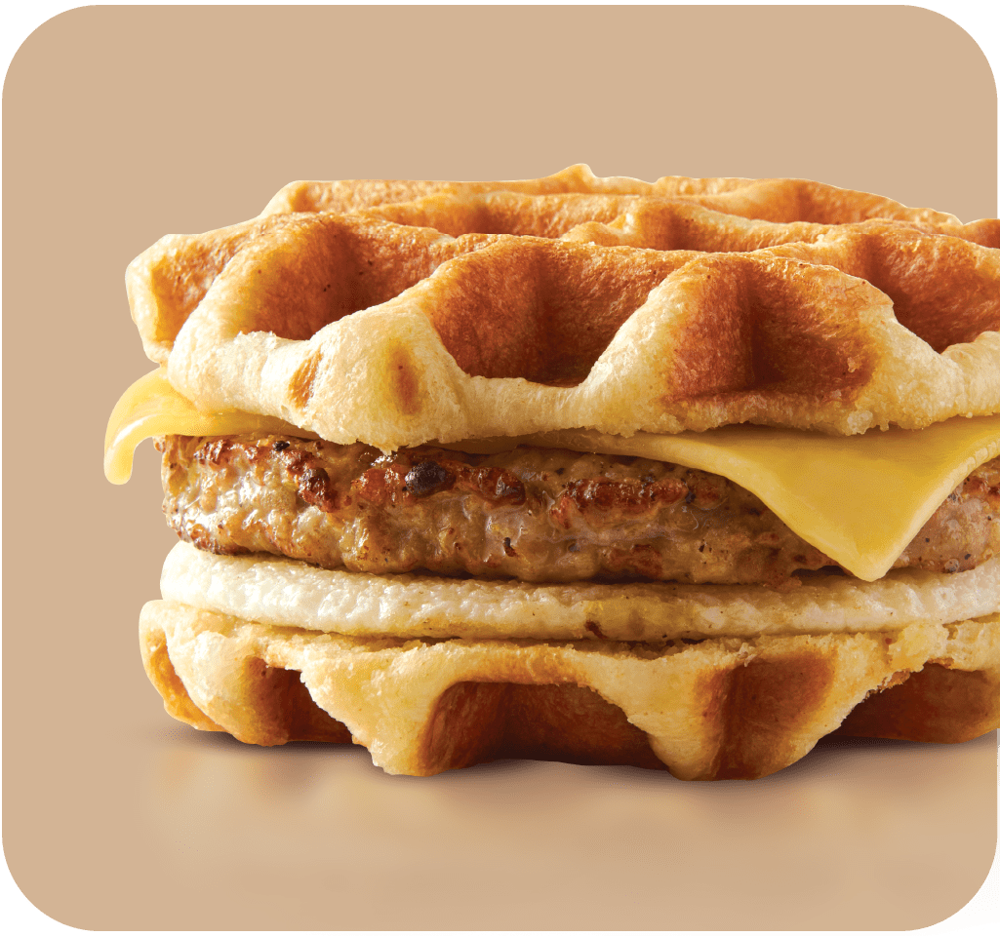
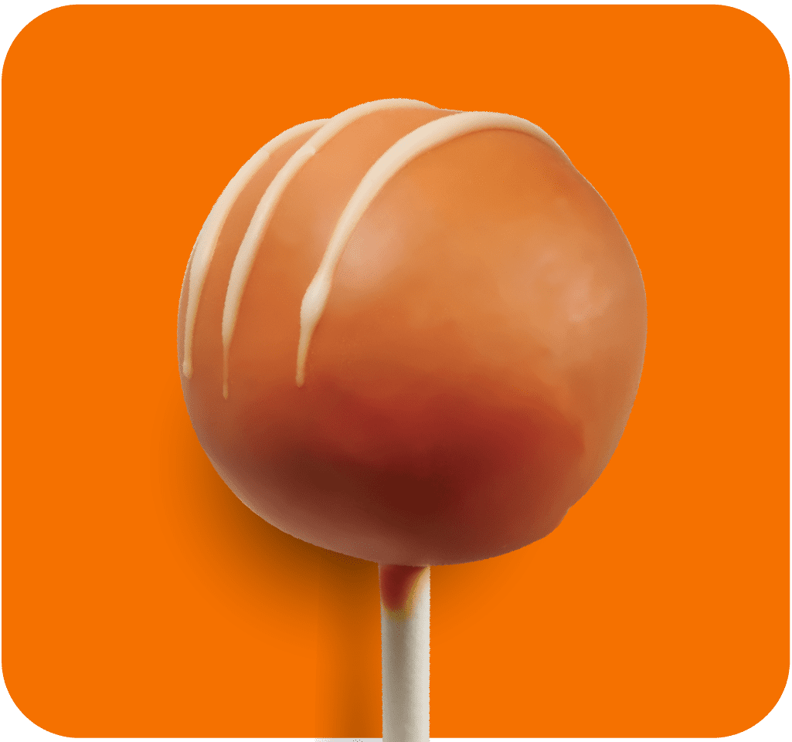
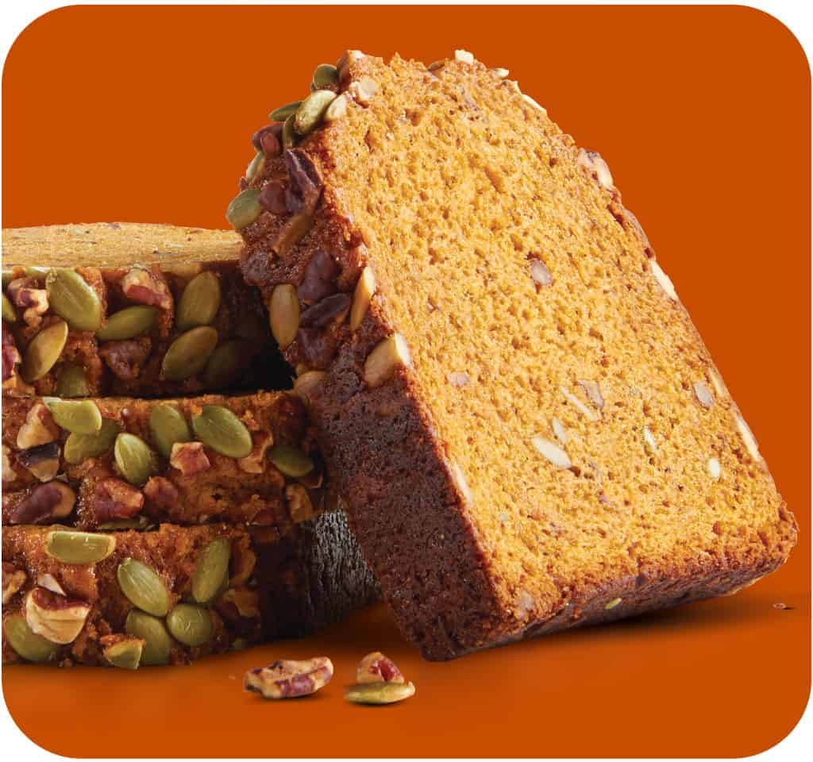
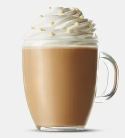
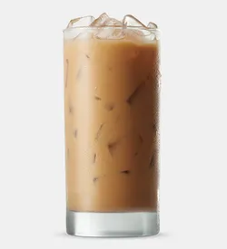
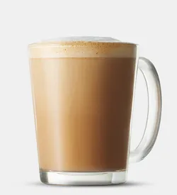
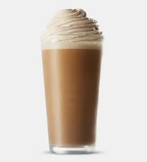
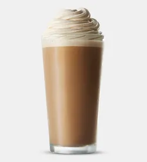
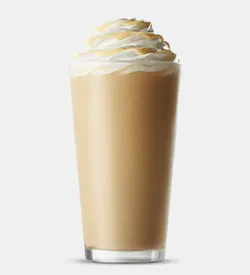
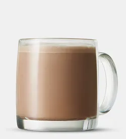

PRUEBA LOS SABORES DEL OTOÑO EN CARIBOU COFFEE®

Gofre de arce
Salchicha Gouda de manzana y pollo, queso Gouda y un huevo de gallina libre entre dos waffles crujientes de arce.

Pastel de calabaza pop
a pequeña golosina llena de calabaza que no es demasiado dulce.

Pan de calabaza
Repleto de bondad de calabaza.
MENU

Moca Blanco Calabaza
Chispas de chocolate blanco derretidas en leche al vapor, combinadas con espresso y calabaza real. Cubierto con crema batida y chispas de chocolate.

Moca blanco helado de calabaza
Chocolate blanco real y espresso combinados con leche y calabaza real; servido sobre hielo.

Latte de calabaza
Espresso y leche vaporizada, combinados con calabaza real; cubierto con nuez moscada molida
Latte helado de calabaza
Espresso y leche combinados con calabaza real; servido sobre hielo.

Latte Nitro De Calabaza
Nitro prensa en frío con leche y calabaza real; cubierto con crema batida espresso.

Nitro Moca Blanco Calabaza
Nitro prensa en frío con leche, chocolate blanco y calabaza real. Cubierto con crema batida espresso.

Bebida mezclada Caribou Cooler® con moca y calabaza blanca
Café licuado con hielo, chocolate blanco y calabaza real. Cubierto con crema batida y un chorrito de chocolate blanco.

chai de calabaza
Un té chai latte con calabaza real; cubierto con nuez moscada molida.